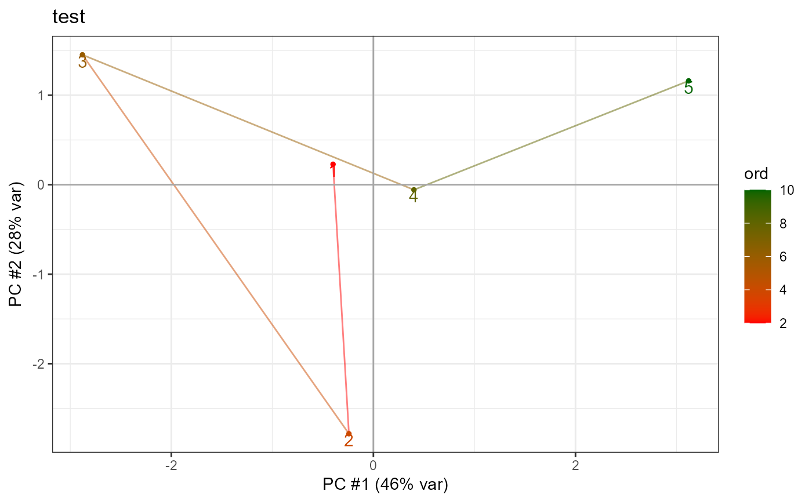

R/fcn_PCA.R
getPCA.RdCreate a principal component analysis (PCA) plot for the first two dimensions.
getPCA(data, do_plot = TRUE, connect_line_order = NA, gg_layer)Matrix(!) where each row is one high-dimensional point, with ncol dimensions, e.g. a mouse as an array of proteinexpressions rownames(data) give classes for colouring (can be duplicates in matrices, as opposed to data.frames)
Show PCA plot? if ==2, then shows correlations plot as well
Connect points by lines, the order is given by this vector. Default: NA (no lines)
More parameters added to a ggplot object (ggplot(x) + gg_layer)
[invisible] Named list with "PCA": The PCA object as returned by prcomp, access $x for PC values
and "plots": list of plot objects (one or two)
n = 5
m = 10
data = matrix(runif(n * m), nrow = n, ncol = m)
rownames(data) = 1:n
getPCA(data, connect_line_order = 1:n, gg_layer = ggplot2::ggtitle("test"))
#> $PCA
#> Standard deviations (1, .., p=5):
#> [1] 2.144889e+00 1.677370e+00 1.434592e+00 7.265165e-01 4.531900e-16
#>
#> Rotation (n x k) = (10 x 5):
#> PC1 PC2 PC3 PC4 PC5
#> [1,] -0.285032852 -0.21837802 0.486847015 0.08981527 0.462904724
#> [2,] -0.399763932 -0.03773880 -0.323455566 0.29345028 -0.007545419
#> [3,] -0.278760452 0.37227355 0.171507428 -0.60318500 0.013193294
#> [4,] 0.157142014 -0.36153052 0.501700052 -0.03459246 -0.394204126
#> [5,] -0.430361544 -0.16076497 -0.170389155 0.17113928 0.042242426
#> [6,] 0.001997806 0.51974212 0.310509894 0.28045589 -0.515123794
#> [7,] 0.325763703 0.09564062 -0.474291781 -0.20910682 -0.078944819
#> [8,] -0.034932868 0.56087779 0.075217446 0.43009516 0.267575364
#> [9,] 0.419711107 -0.17700552 -0.003423363 0.43830909 0.043281482
#> [10,] -0.433392791 -0.17480185 -0.145491596 0.10965782 -0.532214463
#>
#> $plots
#> $plots[[1]]

#>
#>
#> $correlations
#> [1] NA
#>